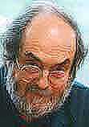
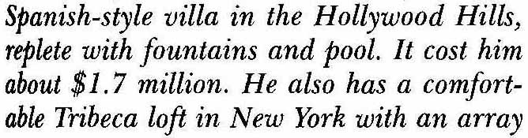
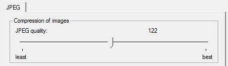
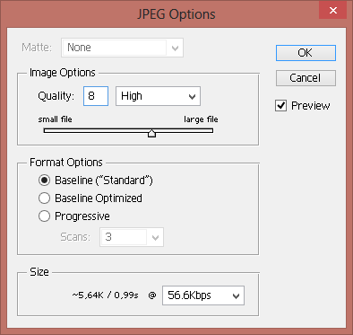
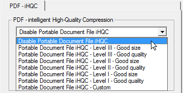

Let’s pursue another aspect now: OCR software reduces huge matrices of dots to a few thousand characters per page. We just showed how you get 90,000 pixels on a square inch. But how about a normal page — a US Letter (8.5 x 11” or 21.58 x 27.93 cm.) or A4 (8.27 x 11.69” or 21 x 29.69 cm.) page? How many times can you fit the small square inch block in such a page? The unavoidable conclusion is: it takes millions of dots to compose a black-and-white image of an average page!
But that’s not the end of it: had we scanned the page in greyscale instead of black-and-white, it would have taken 8 bits, not 1 bit, to store a pixel. And had we scanned in true color, it would have taken 24 bits to store a pixel.
| US Letter | ||
| page format |
8.5 x 11 inch
21.58 x 27.93 cm. |
|
|
number of pixels
(resolution: 300 dpi) |
(8.5” x 300 dpi) x (11” x 300 dpi) = 2,550 pixels x 3,300 pixels | 8,415,000 pixels |
| Storage needs for scanned image | ||
|
black-and-white scan
(1 bit per pixel) |
8,415,000 pixels x 1/8 byte |
1,051,875
(about 1 MB) |
|
greyscale scan
(8 bits per pixel) |
8,415,000 pixels x 1 byte |
8,415,000 bytes
(about 8.5 MB) |
|
true color scan
(24 bits per pixel) |
8,415,000 pixels x 3 bytes |
25,245,000 bytes
(about 25 MB) |
OCR software sifts through millions of pixels and converts the pixels into characters. (Remember Moore’s law that says microprocessor chips double in power every 18 months? Make no mistake: the increased power of microprocessors and the abundance of RAM memory in modern computers was very beneficial to the speed of OCR software!)
You should never select a resolution above 400 dpi. (When you double the scan resolution, the memory cost goes up 4 times...) You’re just slowing down the recognition without winning extra recognition accuracy.
Storing images requires 1 to 24 bits per pixel with millions of pixels per page; storing a character requires 8 bits per character and you’ve only got a few thousand characters per page. OCR can rightly be called the big crunch, the ultimate data compressor!
Evidently, many compression techniques were developed over the years to make images more “manageable”. Compression exploits the repetition and irrelevancy of data. If a complete line of pixels is white, why bother storing every single pixel with the same color value? In the picture of a sunset, a single pixel slightly lighter than the other pixels never gets noticed anyway. That dot is “irrelevant”, so why store it?
The standard efficient compression technique for black-and-white images is Group 4 TIFF: it reduces 1 MB files to about 50 KB — that’s a 20:1 compression ratio.
A standard compression technique for greyscale and color images is JPEG. JPEG images — “JPEG” stands for “Joint Photographic Experts Group” — reduce the file size by discarding extra data not essential for the display of the image. The bigger the compression, the smaller the image becomes.
Because it discards data, the JPEG algorithm is referred to as “lossy”. (TIFF Group 4 compression is “lossless”: no single pixel is lost going through the compression and decompression process.) Once a JPEG image has been compressed, it is no longer identical to the original image! JPEG images are automatically decompressed when they’re opened.
In most cases, nobody can notice the difference between the original image and an image with minimal compression unless you zoom in on the details. However, image quality can degrade substantially as the compression ratio increases.

To recognize such images, for instance JPEG files received by e-mail, you have to choose an appropriate trade-off between the image quality and the amount of compression. Excessive JPEG compression is rough on all sharp contrasting edges: see how vague dark smudges start to surround the characters as the compression increases — and think of the nasty effect that this can have on the recognition! (Resave a JPEG file and things get worse: pixel data get lost each time you compress a JPEG image...)

In short, significant JPEG compression is counterproductive to the sharpness and detail of all text. Here’s a rule of thumb: the 0.8 image quality on a scale from 0 (low quality) to 1 (best quality) does not degrade the OCR accuracy significantly.
 
Compression is even more efficient for PDF documents. You’ll even find specialized, sophisticated software whose main feature is to compress your PDF scans with a factor 20 without dramatic loss of quality… I mention this because you can convert image files in PDF format into editable documents too!

The text is in the eye of the beholder — The intelligence of OCR — Bitmaps only take you so far — 90,000 kids on the block — OCR is the ultimate data cruncher! — OCR deserves recognition
Home page — Intro — Scanners — Images — History — OCR — Languages — Accuracy — Output — BCR — Pen scanners — Sitemap — Search — Contact – Feedback